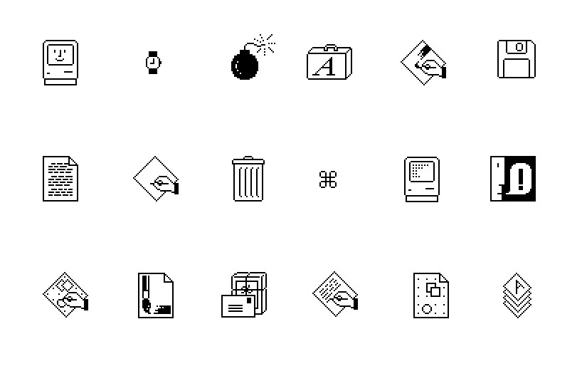

Interactive Visual Task
Introduction / Susan Kare / The Visual Interface
In the 1980s designer Susan Kare (b. 1954) designed the interface elements, icons and typefaces for the Apple Machintosh’s graphical user interface (GUI).
Kare’s visual icons communicated to the user the functions and actions of the computer’s system, for example the ‘trash can’ or the ‘file’ icon.
The visual design of an interface communicates the purposes and relationships of its many elements (this is a menu and its menu items), changes in the state of the system (you have mail!), and can also communicate ideas, concepts and stories.

For This Assignment
This brief aims to be a basic introduction to how visual form is generated by code, how a coded form can change in response to a user's interaction, and lastly how this works as a means of communication.
Design a simple form that could change between two states to communicate an idea. For example the bin icon visually changing from having papers in it, to having non, informs us that the bin has been ‘emptied’. If we had the world ‘hot’ rendered in red, and then on click changed it to blue, might we thing that the word is not so hot anymore?
You can change the form in any way you like, but the change should be used to in some way either reinforce, undermine, alter or in some way change the meaning of the initial visual symbol that the user sees once they have clicked on it. The change your concept creates can be smart, witty, surprising, sad, interesting – try to elicit a reaction or and communicate an idea in your sysmbols change in state
Requirements / How to do This Assignment
We will be giving you a base file to work on. Stick to the base code and add in your visual drawn in code where we have commented in the code to put them, leave the size of the file as is
- To create your forms you can only use basic shapes: point(), line(), rectangle(), triangle(), ellipse(), quad()
- Stick to graycale colour i.e. black & white and set the fill and stroke of your shapes using the fill(), stroke(), strokeWeight(), noFill() and noStroke() commands
- Stick to the canvas size set in the code of 400 x 400px
- The background of your sketch can be any colour
Drawing your Form / Sketch First
From how you learnt you can draw in code, create your simple visual form. We encourage you to first sketch your ideas on paper and consider how your form will be drawn and change and how you would achieve or translate your visual into code. In designing her icons for the Macintosh computer Kare used sketching, as she did not have a computer at the time, but created graph paper of 32*32 pixels to design her icons. Listen to Kare talk about designing her icons here
Resources to Help You Complete This Task
See pdf of 'Draw' chapter from Introduction to P5.js, available on UTSOnline
Introduction to P5.js is also available as an electronic book at the UTS Library
Beyond This Task
If you would like to learn more in your own time there are many excellent books and online tutorials that you can extend your new coding knowledge with, visit the P5 or Processing (the programming language that P5 is based upn) site and see the 'Books' and learning guides listed there